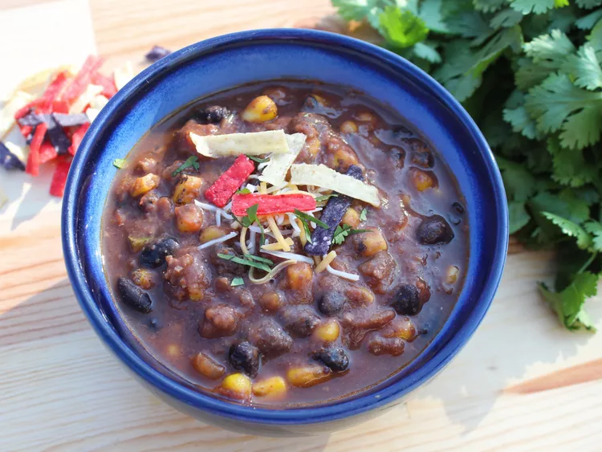

5 Ingredient Tortilla Soup

Ingredients
- 1 pound ground beef
- 1 (24-ounce) jar thick and chunky salsa
- 2 (15.5-ounce) cans reduced-sodium black beans, rinsed and drained
- 12 ounces fire roasted frozen corn
- 2 1/2 cups beef broth
Steps
- Heat a large pot over medium-high heat. Cook and stir ground beef until browned and crumbly, 7 to 10 minutes. Drain and discard any excess grease.
- Combine one can of black beans and 1/2 jar salsa in a blender; blend until smooth. Add the black bean mixture, remaining can of black beans, frozen corn, remaining salsa, and beef broth into the pot; reduce heat to medium.
- Heat soup until warm, about 10 minutes. Serve with your favorite toppings.
Home